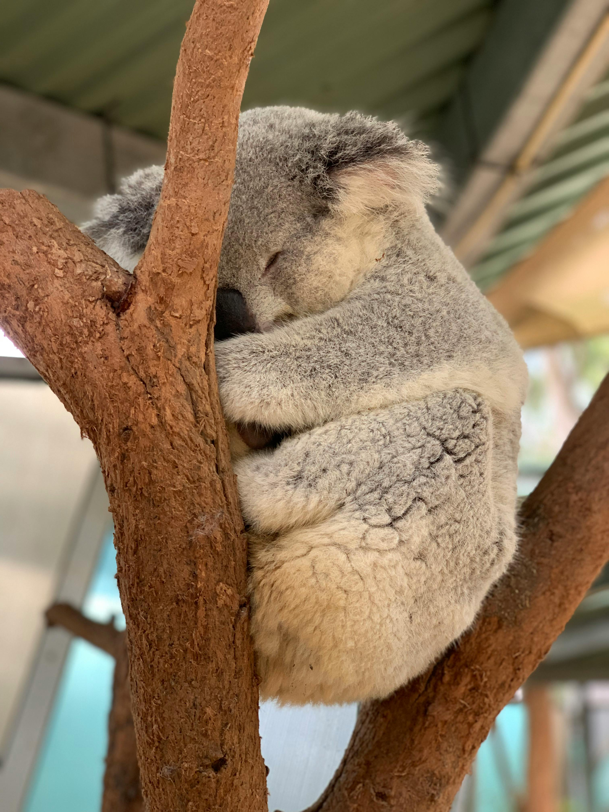
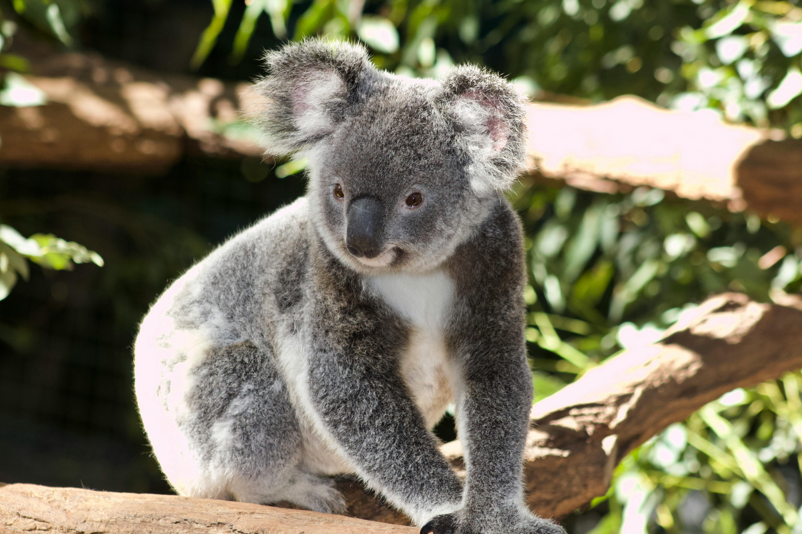

Information About Koalas
-
What does a Koala bear look like?
Koalas have soft, wool-like fur that is gray above and white below. Their fur is mostly white on the underside below the neck, and their ears have long white hairs on the tips. The koala resembles a bear, but is actually a marsupial, a special kind of mammal which carries its young in a pouch.
 -
What is the endangered status of the Koalas?
Koala bears are classified as vulnerable to be endangered.
-
How large can Koalas get?
Koalas are rather small, round animals. They weigh about 30 pounds and on average grow to be 2 feet tall.
-
What is the population of Kolas?
There are fewer than 100,000 koalas.
-
What is the average lifespan of a koala?
Koalas can live as long as 17 years, although high mortality rates (due to car fatalities and dogs) for males lower their life expectancy to 2 to 10 years.
-
Where do Koala's live?
The koala's historic range stretches across Australia. Today they can be found only in Queensland, New South Wales, Victoria, and South Australia.
 -
What type of environment do Koala's like?
Koalas prefer to live in eucalyptus forests, coastal islands, and low woodlands.
-
What do Koala's eat?
Koalas consume eucalyptus leaves and bark from 12 different eucalyptus tree species. They also consume mistletoe and box leaves. Koalas consume eucalyptus leaves and bark from 12 different eucalyptus tree species. They also consume mistletoe and box leaves.
-
How do Koala's behave?
Nocturnal mammals, koalas sleep for up to 16 hours a day. They are arboreal, which means that they live in trees. They do not live in big groups but rather prefer to be alone.
-
How do Koala's populate?
Koalas breed once a year. Gestation lasts 35 days, after which one koala is born. The baby koala is very small when it is born, and lives in its mother's pouch for five to seven months. After this time, koalas gradually become independent and survive on their own.
-
What are some major threats of Koala's?
Once numbering in the millions, koalas suffered major declines in population during the 1920s when they were hunted for their fur. Today, habitat destruction, traffic deaths, and attacks by dogs kill an estimated 4,000 koalas yearly.
-
How can we protect Koala's?
Australian national laws protect koalas, but each individual state is responsible for the animal's conservation.